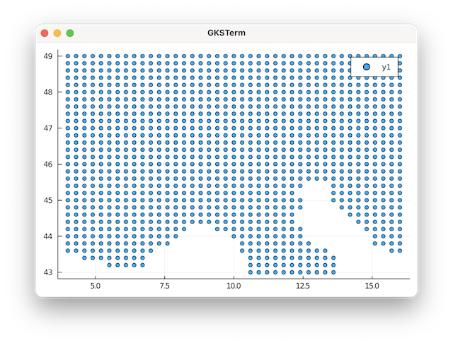
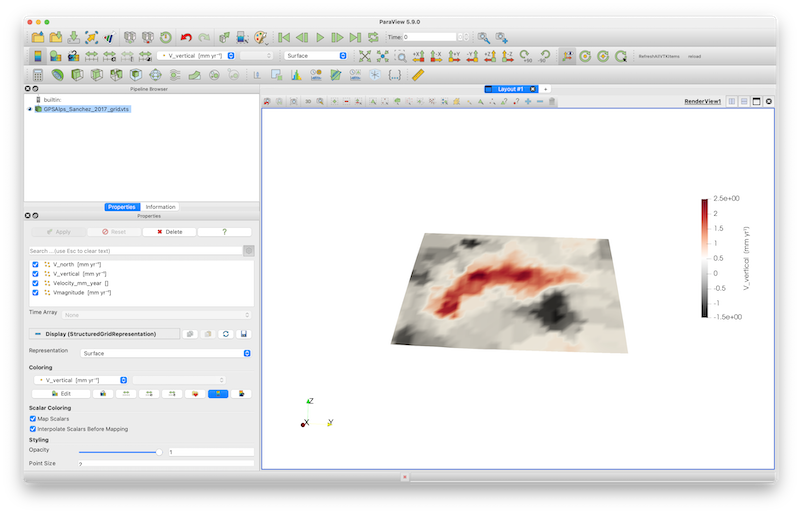

Import and visualize GPS data
Goal
In this tutorial, we discuss how to read the GPS data of Sanchez et al. (2018) https://essd.copernicus.org/articles/10/1503/2018/#section7, which can be downloaded from: https://doi.pangaea.de/10.1594/PANGAEA.886889 You will also learn how to visualize them as vector data in Paraview.
1. Load data
We start with loading the required packages, which includes DataFrames and CSV to read the GPS data.
using GeophysicalModelGenerator
using DataFrames, CSVRead in coordinates of the grids (not stations as they are given in a different reference frame)
Note: the Vz velocity is given on a fully regular grid; yet Ve/Vn only on on-land stations which makes this a bit tricky.
The approach we take here is to first read in the Vz data points & reshape it to 2D matrixes Next, we read the Ve/Vn data and add them to the Vz grid
Download the data:
download_data("https://store.pangaea.de/Publications/Sanchez-etal_2018/ALPS2017_DEF_VT.GRD","ALPS2017_DEF_VT.GRD")Let's have a look at the file ALPS2017_DEF_VT.GRD. If we open it with a text editor, we see that the data starts at line 18, and has the following format:
Column 1: Longitude [degrees]
Column 2: Latitude [degrees]
Column 3: Velocity in the height direction [m/a]
Column 4: Uncertainty of the height component [m/a]
4.00 43.00 0.000067 0.000287
4.30 43.00 -0.001000 0.000616
4.60 43.00 -0.001067 0.000544So we have 4 columns with data values, and the data is separated by spaces. We can load that in julia as:
data_file = CSV.File("ALPS2017_DEF_VT.GRD",datarow=18,header=false,delim=' ')
num_columns = 4;
data = parse_columns_CSV(data_file, num_columns); #Read numerical data from the file
lon_Vz, lat_Vz, Vz_vec = data[:,1], data[:,2], data[:,3]2. Check & reshape vertical velocity
Let's have a look at the data, by plotting it:
using Plots
Plots.scatter(lon_Vz,lat_Vz)
So clearly, this is a fully regular grid. We can determine the size of the grid with
julia> unique(lon_Vz)
41-element Vector{Float64}:
4.0
4.3
4.6
4.9
5.2
5.5
5.8
⋮
14.5
14.8
15.1
15.4
15.7
16.0
julia> unique(lat_Vz)
31-element Vector{Float64}:
43.0
43.2
43.4
43.6
43.8
44.0
44.2
⋮
48.0
48.2
48.4
48.6
48.8
49.0So we have a 41 by 31 grid. GMG requires 3D matrixes for the data (as we want to plot the results in paraview in 3D). That is why we first initialize 3D matrixes for lon,lat,Vz:
lon, lat, Vz = zeros(41,31,1),zeros(41,31,1),zeros(41,31,1)Reshape data to 2D (and 3D) matrixes:
lon[:,:,1] = reshape(lon_Vz,(41,31))
lat[:,:,1] = reshape(lat_Vz,(41,31))
Vz[:,:,1] = reshape(Vz_vec,(41,31))
Vz = Vz*1000 #in mm/year (original data in m/yr)
Ve = ones(size(Vz))*NaN
Vn = ones(size(Vz))*NaN3. Load horizontal velocities
Next, we load the horizontal velocities which is available in the file ALPS2017_DEF_HZ.GRD
download_data("https://store.pangaea.de/Publications/Sanchez-etal_2018/ALPS2017_DEF_HZ.GRD","ALPS2017_DEF_HZ.GRD")
data_file = CSV.File("ALPS2017_DEF_HZ.GRD",datarow=18,header=false,delim=' ')
data = parse_columns_CSV(data_file, 10)
lon_Hz, lat_Hz, Ve_Hz, Vn_Hz = data[:,1], data[:,2], data[:,3], data[:,4]Let's plot the data as well:
Plots.scatter(lon_Hz,lat_Hz) So it appears that the horizontal velocities are given on the same regular grid as well, but not in the water. This thus requires a bit more work. The strategy we take is to first define 2D matrixes with horizontal velocities with the same size as Vz which are initialized with NaN (not a number), which is treated specially by Paraview.
Ve_Hz = Ve_Hz*1000; #in mm/year
Vn_Hz = Vn_Hz*1000; #in mm/year
for i in eachindex(lon_Hz)
ind = intersect(findall(x->x==lon_Hz[i], lon), findall(x->x==lat_Hz[i], lat))
Ve[ind] .= Ve_Hz[i];
Vn[ind] .= Vn_Hz[i];
end
Vmagnitude = sqrt.(Ve.^2 + Vn.^2 + Vz.^2) # velocity magnitude in mm/yr4. Interpolate topography on grid
Finally, it would be nice to put the data points on the topography. The elevation of the points is not given in the GPS dataset, so we use GMT to extract a topographic grid and interpolate the elevation on the GPS grid locations
using GMT, InterpolationsWe use the import_topo function to read the topography from a file:
Elevation = import_topo([3,17,42,50], file="@earth_relief_01m");
nothing #hideWe now want to interpolate the elevation on the GPS grid locations.
Lon_vec = NumValue(Elevation.lon)[:,1,1];
Lat_vec = NumValue(Elevation.lat)[1,:,1];
interpol = LinearInterpolation((Lon_vec, Lat_vec), NumValue(Elevation.depth)[:,:,1]); # create interpolation object
height = interpol.(lon,lat)/1e3At this stage we have lon/lat/height of all points as well as velocity components
GPS_Sanchez_grid = GeoData(lon,lat,height,(Velocity_mm_year=(Ve,Vn,Vz),V_north=Vn*mm/yr, V_east=Ve*mm/yr, V_vertical=Vz*mm/yr, Vmagnitude = Vmagnitude*mm/yr, Topography = height*km))Save paraview is as always:
write_paraview(GPS_Sanchez_grid, "GPSAlps_Sanchez_2017_grid")Opening and plotting the vertical field gives: 
In order to plot the velocities as arrows, you need to select the Glyph tool (red circle). Also specify Velocity_mm_year () as both Orientation and Scale Array, and add 50 as scale factor. Once you push Apply it should look like: 
The arrows can now be colored by the individual velocity components or its magnitude.
This page was generated using Literate.jl.